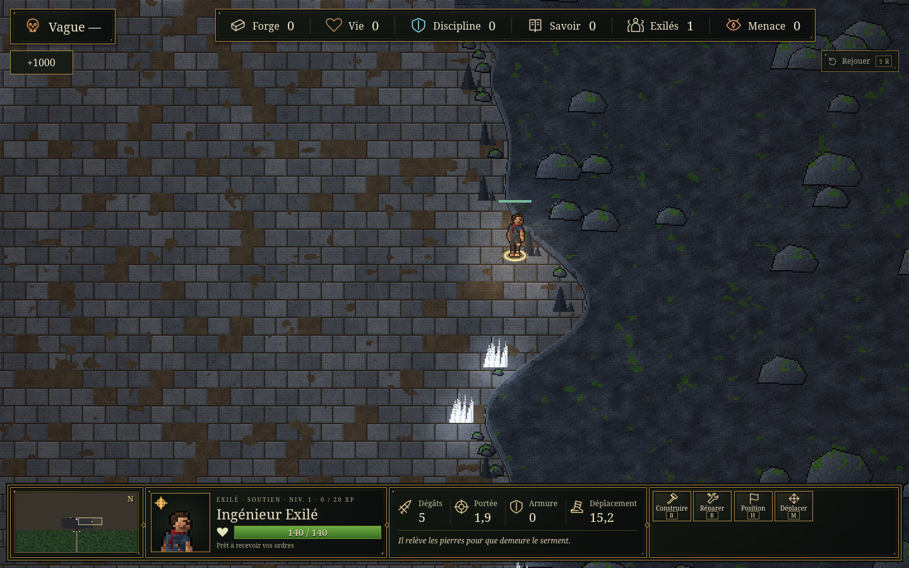

Au reposLe Sceau est débloqué et l’Ingénieur sélectionné. La roche conserve son aspect habituel tant qu’aucune case n’est survolée.
Case minable survoléeVoile cyan léger, contour sombre puis lumineux et angles renforcés. Le clic droit donne l’ordre de miner.
Règle d’affichage proposéeDéverrouillageSceau de minage recherché.SélectionL’Ingénieur fait partie de la sélection.Cible valideUne case de roche minable de 4 × 4 unités.Sortie du survolLa teinte, le contour et l’infobulle disparaissent.